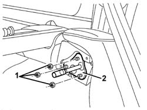
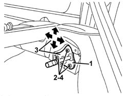

7050A45 STRIKER FOR ATTACHMENT/RELEASE DEVICE for .one( SPLIT rear), seat BACKREST left or right - R.R.
- Path
- Procedures > 70 FITTINGS > 7050 REAR SEATS > 7050A rear seat assembly > 7050A45 STRIKER FOR ATTACHMENT/RELEASE DEVICE for .one( SPLIT rear), seat BACKREST left or right - R.R.
- Kind
- repair procedure (removal / refitting; the operation number is the code)
- Applies to
- all engines; all production periods
- Interactive page
- https://sloeber94.github.io/elrnDB-a156/en/#/3238927
Applies to: all engines; all production periods; only with equipment: Station Wagon
 Removing
Removing
 Refitting
RefittingLower the rear seat backrest.
1. Unscrew the nuts.
2. Remove the striker.

Applies to: all engines; all production periods; only with equipment: Station Wagon
Refitting
RemovingCheck that the striker is undamaged.
1. Fit the striker.
2. Screw on the fixing nuts, without tightening them.
3. Move the striker into the correct position, using the slotted holes. Permitted adjustment movements are indicated by arrows.
4. Tighten the fixing nuts.

Applies to: all engines; all production periods; only with equipment: Station Wagon
Check that the seat squab engages correctly and, if necessary, repeat the adjustment.
Topics that link to this page (8)
- 1040A66 Fuel LEVEL GAUGE for submerged pump assembly - Replace.
- 1040A70 submerged pump assembly complete with level guage control - r + r
- 1040B36 rear fuel delivery line - r r
- 1040B56 fuel return line - r r
- 7050A13 SPLIT rear. seat LEFT BACKREST- R.R.
- 7050A15 SPLIT rear. seat RIGHT BACKREST- R.R.
- 7050A43 ATTACHMENT/RELEASE DEVICE for one SPLIT rear seat BACKREST. -R.R.
- 7065B40 Rear seat belt reel mounting BRACKET , (one), left or right - R.R .